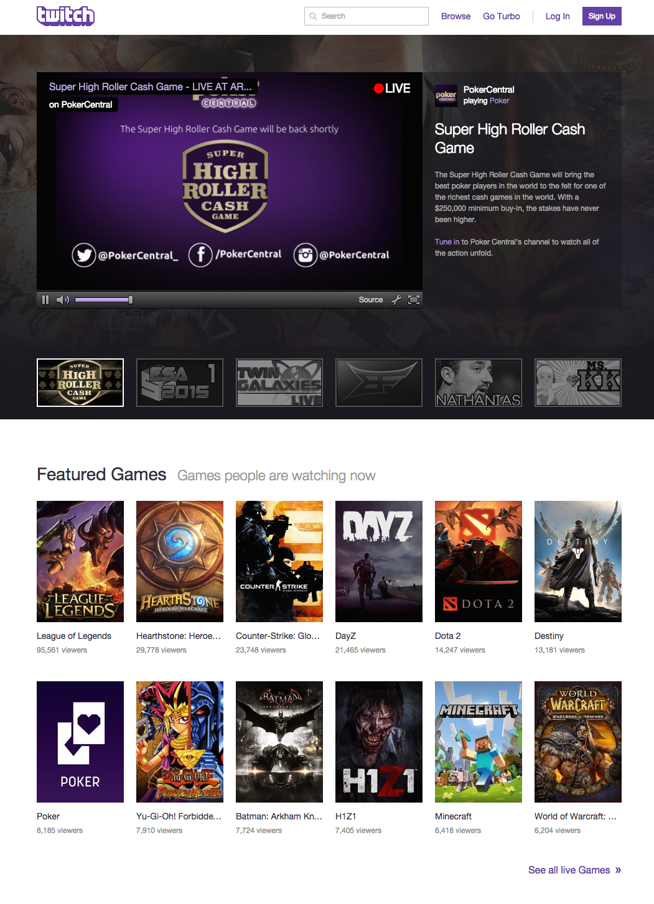

TWITCH INTERFACE ANALYSIS

Twitch is a live streaming video platform for gamers. This is good design because it meets almost all needs within the design hierarchy.
Functionality: The website does it's job, meaning I came here to watch people play games and that's what I see.
Reliability: The website functions consistently, however, the reliability of viewing videos will depend on the users own Internet connection. If many users are watching the same live stream, it is possible that the server will crash.
Usability: The navigation system is very easy to maneuver around. Users can easily accomplish basic tasks, such as logging in, playing or pausing a video, or finding games to watch. The content is well organized making it easy to browse for popular games and the text is readable.
Proficiency: The website is semi-proficient. Twitch has features where you can share, follow, subscribe (pay money), or even chat with users, making the design intuitive. Almost all social media websites have this same formula nowadays because they know it works. However, there is a lack of proficiency because there is no advanced search option when searching for games. The search is filtered by the most viewers a game has, making it difficult to find games that are not popular at the moment. It may be easier to categorize the games into genres so users could find less known or older games easily.
Creativity: Twitch allows users to customize their profiles with their own skins, making the experience to interact with others memorable.